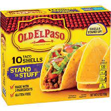

Tiffany Tacos

Tiffany Tacos are what I call an attempt made by uncultured individuals like myself at making authentic mexican tacos. My tacos always include some form or fashion of Old El Paso seasoning and Ortega sauces.
Ingredients:
- Old El Paso Seasoning
- Mild or Medium Ortega Sauce
- Shredded Cheese
- Hamburger Meat
- Lettuce
- Sour Cream
- Spicy Ranchero Sauce
- Taco Shells (Preferably the Cool Ranch flavored ones)
Instructions:
- Brown the hamburger meat.
- Drain the meat and add the seasoning.
- Add seasoned meat to your taco shells.
- Top with the cheese and sauces that you have provided.
- Enjoy!